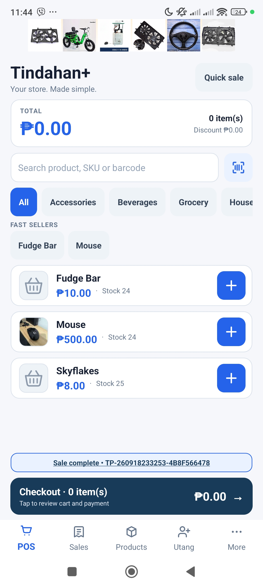
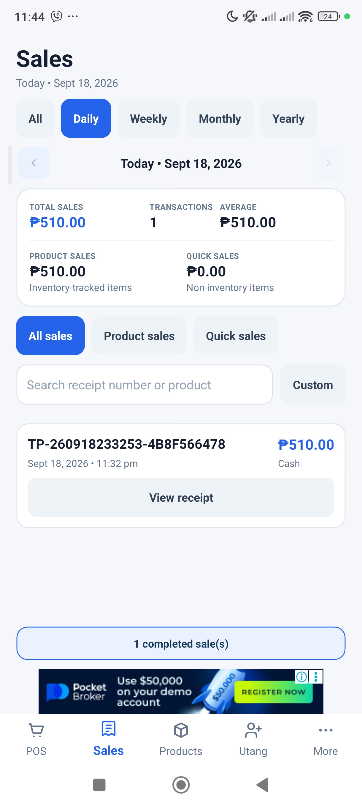
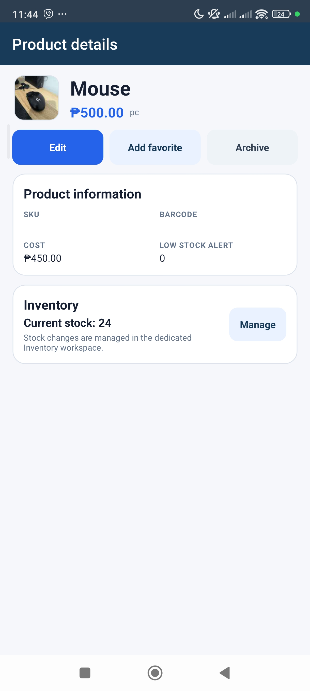
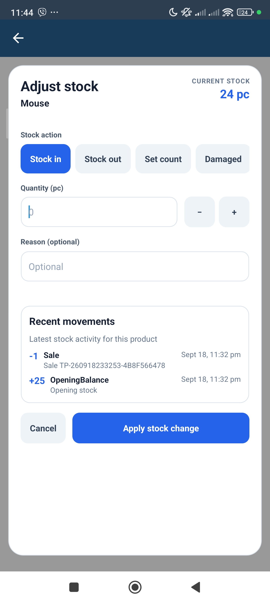
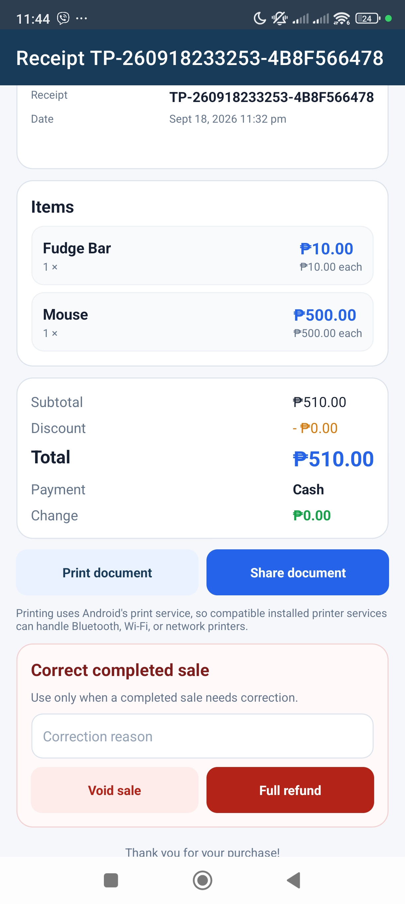

01 / SELLPoint of sale
Keep checkout focused.
Record sales and receipts through a straightforward POS workflow designed for repeated daily use.
Tindahan+ brings sales, inventory, Utang, expenses, customers and reports together in one focused Android app for sari-sari stores and small businesses.

Instead of stitching together notes, spreadsheets and separate tools, keep the everyday store workflow in one place.
Record sales and receipts through a straightforward POS workflow designed for repeated daily use.
Manage products and stock movements so inventory stays connected to sales.

Store customer details and credit ledger activity together instead of relying on loose notes.

Review reports and expenses to understand store activity beyond individual sales.

The product keeps everyday tasks accessible while giving store owners useful controls for records, scanning, backups and access.
Review sales, expenses and business activity in the app.
Create database backups and share them using Android's system tools.
Use camera scanning or compatible HID and keyboard barcode scanners.
Owner, manager and cashier PINs are handled locally as salted password hashes.
Core business operations are designed to work locally on Android. Sales, products, inventory movements, expenses, customer and Utang records, shifts and audit information stay in the app's local database unless you choose to export or share them.
Read the full privacy policyNo invented dashboards. These are actual app screens showing the workflows the website describes.

Tindahan+ documents its optional third-party services, including barcode lookup and Google advertising/consent services, so the product story matches how the app actually works.
Sales, stock, Utang, expenses and reports — together in one Android app.